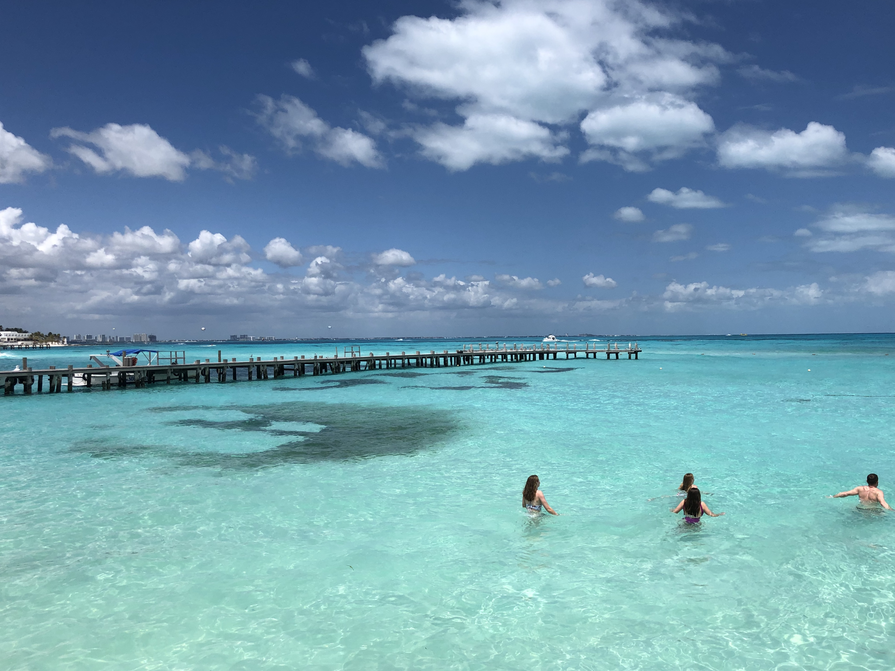
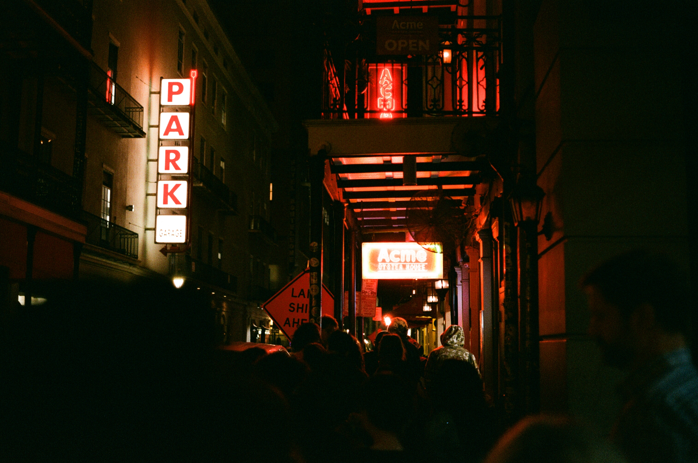
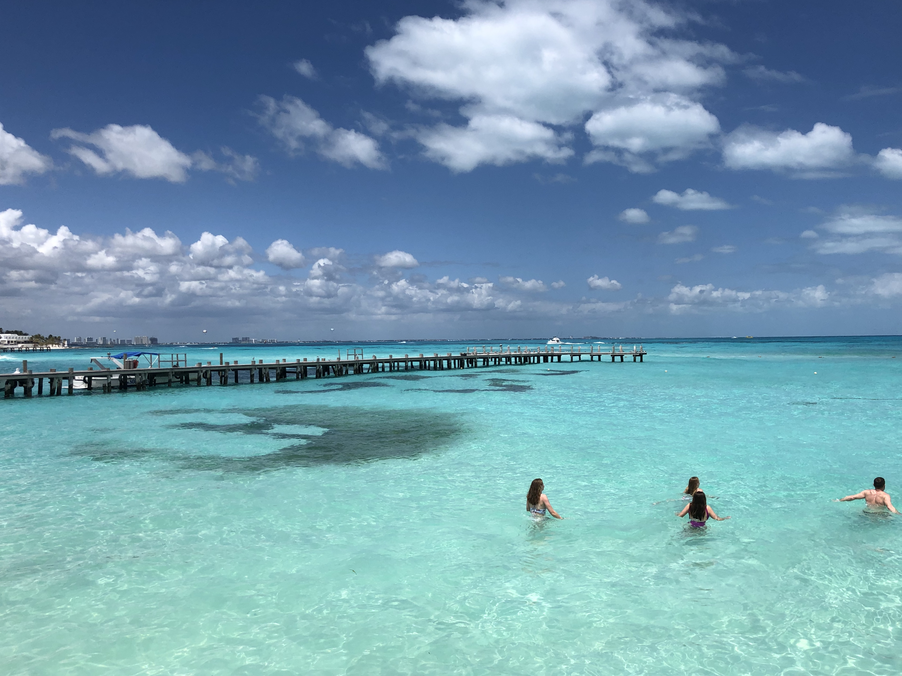
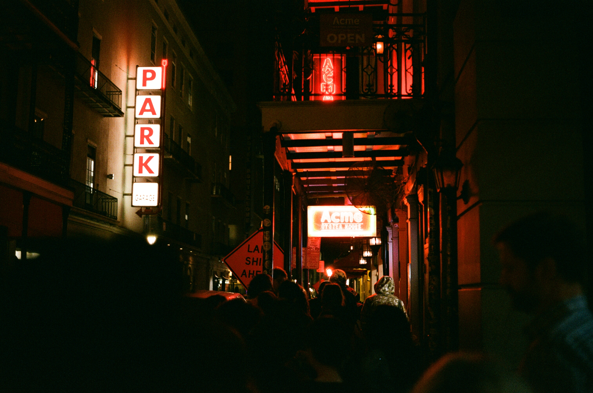
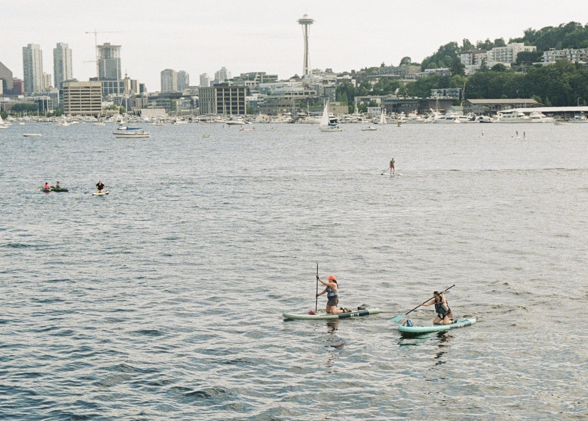
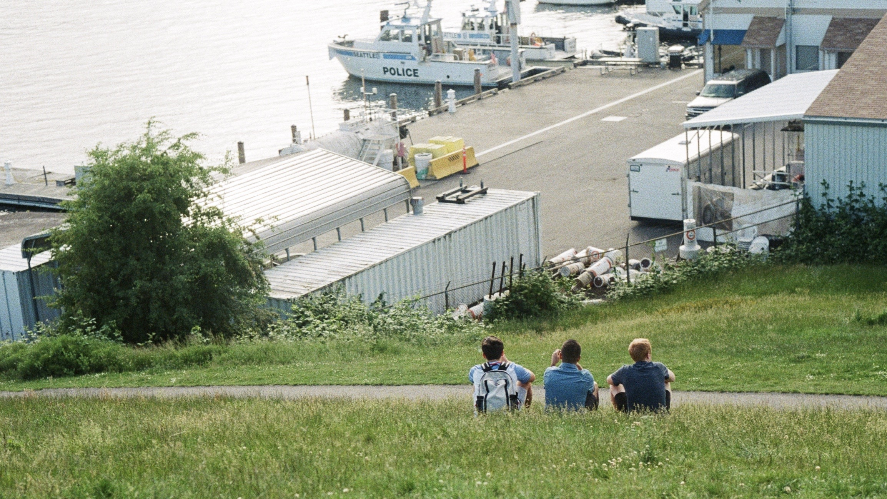
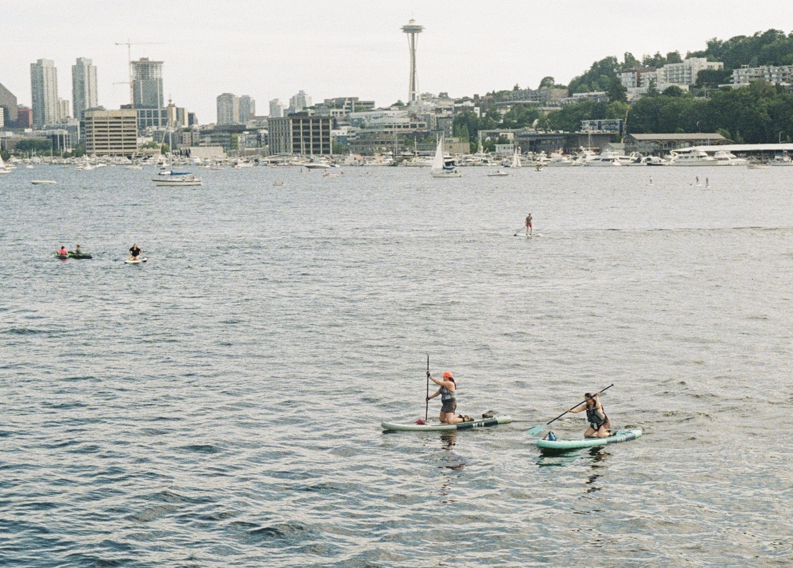
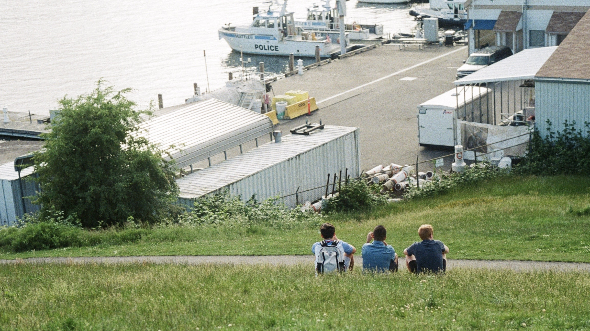

Beautiful scences in my eyes
Gas Work Park, Seattle
Gas Works Park is a park located in Seattle, Washington, United States. It is a 19.1-acre (77,000 m2) public park on the site of the former Seattle Gas Light Company gasification plant, located on the north shore of Lake Union at the south end of the Wallingford neighborhood. The park was added to the National Register of Historic Places on January 2, 2013, over a decade after being nominated
French Quarter, New Orleans
The French Quarter, also known as the Vieux Carré, is the oldest neighborhood in the city of New Orleans. After New Orleans (French: La Nouvelle-Orléans) was founded in 1718 by Jean-Baptiste Le Moyne de Bienville, the city developed around the Vieux Carré ("Old Square" in English), a central square. The district is more commonly called the French Quarter today, or simply "The Quarter," related to changes in the city with American immigration after the 1803 Louisiana Purchase. Most of the extant historic buildings were constructed either in the late 18th century, during the city's period of Spanish rule, or were built during the first half of the 19th century, after U.S. purchase and statehood.

 



 


